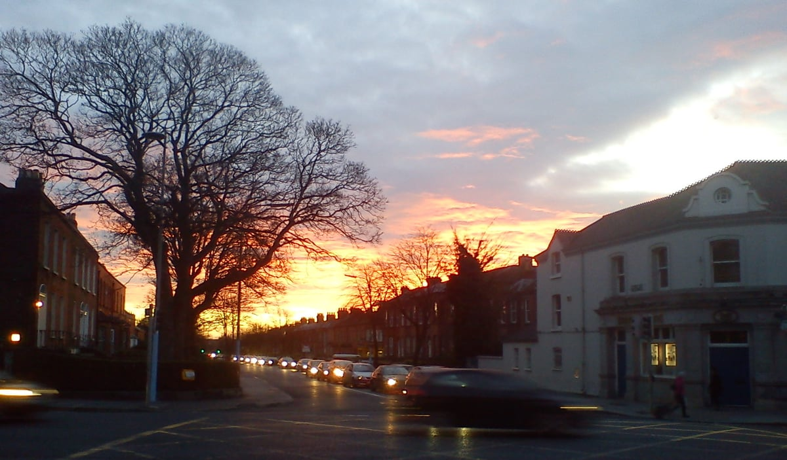
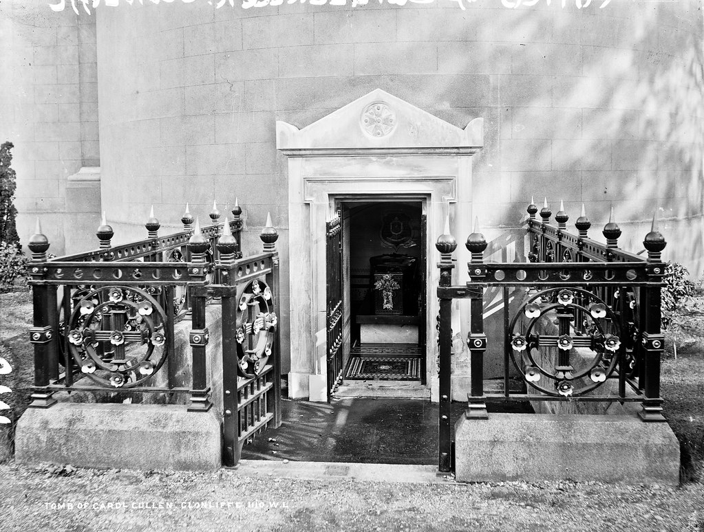

Elizabeth's Story
A Dublin girl who became a nurse in the Channel Islands — and survived Nazi internment
A Dublin girl who became a nurse in the Channel Islands — and survived Nazi internment
Elizabeth Greene was born around 1907 in Dublin City, the youngest child of Thomas Greene and his first wife Elizabeth. In the 1911 Census, she appears as a four-year-old at Clonliffe Avenue, Mountjoy, Dublin — living with her parents and brothers Thomas Jr (10) and Patrick (8).


Her father Thomas had come from Portarlington in King's County (now Offaly) and worked as a Gentleman's Club Steward. The family were Roman Catholic.
At some point in the 1930s, Elizabeth left Dublin and arrived on the island of Jersey, the largest of the Channel Islands, where she worked as a nurse. The Channel Islands, sitting in the English Channel just off the coast of France, were a peaceful British Crown dependency. By the late 1930s she had settled in St. Saviour's parish.
That peace was shattered on 30 June 1940, when German forces occupied the islands. They would remain under Nazi control for five years — the only part of the British Isles to fall under German occupation.
In a discovery that emerged from family papers in April 2026, a primary-source marriage certificate rewrites Elizabeth's story. On 13 September 1941 — fourteen months into the German Occupation — Elizabeth Bessie Greene, age 34, married Alfred Bower Harris, a 28-year-old printer from Bretforton, Worcestershire. The ceremony took place at the Church of St Mary and St Peter, Vauxhall, in the Parish of St. Helier, Jersey. Both gave their address as St. Saviour's. The officiant was Richard T. Arnett; witnesses were F.C. Colligny and C.M. Colligny.
Marrying under enemy occupation is itself a remarkable act. There were no telegrams home to Dublin. No family from Ireland could attend. Her father Thomas Greene — recorded on the certificate as "Retired" — would not learn of his daughter's marriage until communication with the islands was restored after liberation in 1945.
From Page 97 of the Register of Marriages of the Parish of St. Helier:
Alfred Bower Harris (28, Bachelor, Printer, of St. Saviour's, born Bretforton near Evesham, Worcester; father Charles Edward Harris, deceased) and Elizabeth Bessie Greene (34, Spinster, Nurse, of St. Saviour's, born Dublin, Ireland; father Thomas Greene, Retired) — married thirteenth of September 1941.
In September 1942, on Adolf Hitler's direct orders, the German authorities began deporting civilians from the Channel Islands. Approximately 2,300 people were rounded up and sent to internment camps in Germany. The targets were primarily those born outside the islands — in England, Scotland, Wales, and Ireland.
Both Elizabeth (born Dublin) and her new husband Alfred (born Worcestershire, England) fell squarely into this category. Their marriage of barely twelve months was followed straight into internment. Elizabeth was deported to Biberach Internment Camp (officially designated Ilag V-B), located in the town of Biberach an der Riß in southern Germany.
Biberach had originally been a Hitler Youth summer camp, converted into a civilian internment facility. It consisted of 23 barrack huts surrounded by barbed wire and watchtowers. Conditions were harsh — overcrowded rooms, limited food, separation of men and women, and the constant uncertainty of wartime imprisonment.
Yet within the camp, the internees organised themselves — setting up schools, a hospital, communal kitchens, and even entertainment. Elizabeth put her nursing skills to work in the Men's Hospital, serving under Dr. A.W.H. Donaldson, M.B., D.P.H., the camp's Medical Officer.
For at least two years — from approximately May 1943 to May 1945 — Elizabeth cared for the sick and suffering in the camp hospital.
Daily life at Biberach was shaped by deprivation — but also by the internees' extraordinary determination to maintain a semblance of normality.
Food: German rations were meagre — bread, watery soup, potatoes, cabbage, turnips, and ersatz coffee. Chronic hunger was a constant companion. Red Cross parcels, containing powdered milk, tinned meat, and chocolate, were a lifeline that kept many from serious malnutrition.
Medical Care: The camp hospital was run by internee doctors, including Dr. Donaldson — Elizabeth's superior. Facilities were modest, but the work was critical, treating everything from infections to the effects of chronic undernourishment.
School: Volunteer internees ran makeshift schools so that children's education would not be entirely lost. Books were donated by the YMCA and the Red Cross.
Theatre & Recreation: Internees organised theatre groups, concerts, poetry recitals, and satirical plays — small acts of creative defiance. Sports were played with improvised equipment, and a camp library offered escape through reading.
Community: Between 1942 and 1944, the internees received Christmas cards from King George VI and Queen Elizabeth — a reminder that they had not been forgotten by the Crown.
On 23 April 1945, troops of the French First Army liberated Biberach. The war in Europe would end just two weeks later.
Four weeks after liberation, on 21 May 1945, Dr. Donaldson wrote Elizabeth a letter of recommendation — a remarkable document that survives in the family's possession:
To whom it may concern.
Nurse Harris has worked with me during the past two years in the Men's Hospital of this Internment Camp, and I have formed a very high opinion of her nursing abilities. Keen, energetic and efficient, and always cheerful, she has been a most capable and helpful assistant.
Nurse Harris's kindness and sympathy with the sick and suffering have endeared her to all, patients and staff alike, and I can confidently recommend her for any similar post in peace time.
Moreover, Nurse Harris is an excellent cook — her cakes and other dainties have been a god-send where the rationed food has been served up with so little of variety.
A.W.H. Donaldson: M.B., D.P.H.
Medical Officer Men's HospitalBiberach Internment Camp, Germany.
21st May, 1945.
In a camp defined by deprivation, Elizabeth brought warmth. Dr. Donaldson's words paint a picture of a woman who was not just a skilled nurse but a source of comfort — someone whose kindness "endeared her to all." Even her cooking, conjuring cakes and treats from rationed ingredients, was a small act of defiance against the bleakness of internment.
Elizabeth's story is part of a larger, often overlooked chapter of World War II — the deportation of Channel Islands civilians. Their suffering was largely unrecognised in post-war Britain, overshadowed by other narratives of the war. Only in recent decades has the research of scholars like Dr. Gilly Carr of Cambridge University and the Frank Falla Archive begun to restore these stories to the historical record.
Elizabeth was not the only Guernsey nurse deported to Biberach. Gladys Skillett, born 2 May 1918, was deported in September 1942 while five months pregnant — and became the first Channel Islander to give birth in German captivity.
In the maternity ward, Gladys befriended a German mother named Maria Koch. Remarkably, the two families remained friends for decades after the war — a quiet testament to human connection across the lines of conflict.
Gladys's oral history is preserved at the Imperial War Museums (ref: 80012279):
IWM Oral History — Gladys Skillett
Wikipedia — Gladys Skillett
The memory of Biberach internment camp lives on — both in the community that surrounds it and in the families of those who were held there.
With the Jersey marriage certificate now in hand, the research focus shifts to Jersey Archives (not Guernsey as originally assumed). We are still searching for:
{kind=link}
{kind=link}
{kind=link}
{kind=link}
{kind=link}